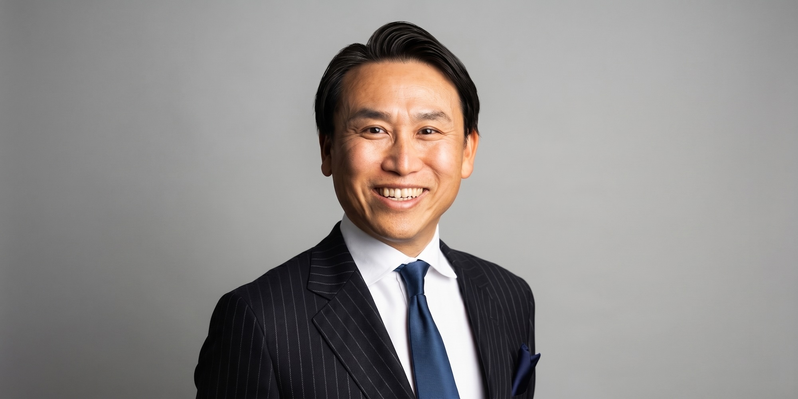

早稲田大学卒業後、SCSKを経て1999年にビズシークを設立、楽天へ売却。その後クロコスを創業しヤフーへ売却するなど、起業家としての道を歩む。
楽天では楽天野球団の立ち上げ、ヤフーではEC事業の拡大、PayPayの立ち上げ、ZOZO・一休・ASKUL等の大型案件の統括を経て、2022年にヤフー代表取締役社長CEOに就任。
2024年にベンチャーキャピタルとPEのハイブリッド機能を持つBoost Capitalを設立。2025年にはAI特化のBoost Consultingを設立。
市場分析から事業立ち上げ、事業化まで一貫して支援。
大規模サービスの成長戦略、マーケティング、組織拡大を実践ベースで支援。
EC・マーケットプレイス・プラットフォーム事業の成長戦略を支援。
AI・DXを活用した新規事業や既存事業の変革を支援。
買収戦略からPMIまで実務経験を踏まえて支援。
創業・資金調達・事業成長・EXITまで幅広く対応。
スタートアップ投資、事業評価、投資判断を支援。
経営戦略・中長期戦略・事業ポートフォリオ設計を支援。
企業提携・資本提携・業務提携の推進を支援。
経営体制・組織づくり・経営チーム構築を支援。
本プロフィールに関する面談調整・案件のご相談は専用窓口にて受付を行っております。